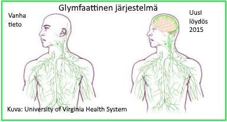

PSYKOLOGIAOPPIMATERIAALIA NETISSÄ VUODESTA 1999 LÄHTIENPSYKOLOGIAN PIKALINKIT PSYKAN VIDEOABIKURSSIT: PSYKOLOGIAN MAAILMA -VIDEOKERTAUSKURSSI ABEILLE (vlogi) - UUSI OPS!! PS7 ABI KERTAUSKURSSI (opetustilanne) - VANHA OPS (OPS 2016-): PS1 Psyykkinen toiminta ja oppiminen PS2 Kehittyvä ihminen PS3 Tietoa käsittelevä ihminen PS4 Tunteet, psyykkinen hyvinvointi ja mielenterveys PS5 Yksilöllinen ja yhteisöllinen ihminen
PS4 valtakunnallinen OPS |
PS4 Tunteet, psyykkinen hyvinvointi ja mielenterveys
Miten käytät näitä muistiinpanoja tehokkaasti? 1. TUNTEIDEN YMMÄRTÄMINEN JA KÄSITTELY ON TÄRKEÄ TAITO 1.1 Katsaus motivaatiopsykologiaan - Yksilön hyvinvointiin vaikuttaa elämäntilanteissa koettujen tunteiden ja motiivien tulkinta ja ymmärtäminen - Motiivit ja tunteet kulkevat käsikädessä - Motiivien ja tunteiden hermostollinen perusta - Motiivien luokittelu - Motiivikonfliktit 1.2 Tunteet ja niiden osatekijät - Perustunteet ovat yleismaailmallisia - Tunteiden osatekijät - Ilmaisemme tunteita erityisesti kasvoillamme ja kehollamme - Tunnetaidot 1.3 Tunneteoriat - Jamesin ja Langen tunneteoria - Cannonin ja Bardin tunneteoria - Behavioristinen oppimista korostava tunneteoria - Schachterin ja Singerin kognitiivisuutta korostava tunneteoria - Lazaruksen tilanteenarviointia korostava tunneteoria 2. HYVINVOINNIN LÄHTÖKOHTIA 2.1 Ihminen on fyysinen, psyykkinen ja sosiaalinen kokonaisuus - Fyysisen kunnon ylläpito on tärkeää - Elämänrytmi luo turvallisuutta ja hoitaa psyykettä - Epäonnistuminen turhauttaa, masentaa ja herättää aggressioita - Pidä yllä hyviä ihmissuhteita 2.2 Uni paras lääke on - Unen vaiheet ja unitutkimus - Unen merkitys ihmisen hyvinvoinnille - Uniongelmat - Hyvän unen aakkoset 2.3 Stressi - Hyvä ja paha stressi - Stressiä aiheuttavat tekijät (fyysiset, psyykkiset ja sosiaaliset tekijät) - Stressin vaikutukset (fyysiset, psyykkiset ja sosiaaliset vaikutukset) - Stressin hoito (fyysisin, psyykkisin ja sosiaalisin keinoin) 2.4 Minäpystyvyys - Optimismi ja usko elämässä pärjäämiseen voimavarana 2.5 Positiivinen psykologia - Positiivinen psykologia suuntauksena - Onnellisuus 3. MIELENTERVEYS - HÄIRIÖT JA HOITO 3.1 Psyykkinen itsesäätely - Defenssit ja coping 3.2 Normaalius ja poikkeavuus 3.3 Psyykkisten häiriöiden pääluokat - Skitsofrenia - Kaksisuuntainen mielialahäiriö - Masennus - Neuroosit: pelkoneuroosit, pakkoneuroosit - Persoonallisuushäiriöt 3.4 Psyykkisten häiriöiden hoito - Psykoterapian toimivuus - Terapiasuuntauksia © Jyrki Rossi, 2017 1. TUNTEIDEN YMMÄRTÄMINEN JA KÄSITTELY ON TÄRKEÄ TAITO1.1 Katsaus motivaatiopsykologiaan
• Motivaatiopsykologia tutkii ihmisen käyttäytymisen taustalla olevia tekijöitä, syitä.  - MASLOWin mukaan vain harvat saavuttavat ylimmän tason. MASLOWin kannattajien mukaan matka itsensä toteuttamiseen onkin tärkeämpää kuin tason saavuttaminen. - Monet psykologit kritisoivat MASLOWin hierarkiaa ja toteavat, että useimmat ihmiset toteuttavat itseään luovasti arkisissakin asioissa. Kyse onkin, miten luovuus määritellään • TUNTEIDEN JA MOTIIVIEN SÄÄTELYSTÄ vastaa limbinen järjestelmä - Koostuu useista osista, kuten mm. isojen aivojen vanhemmista osista, talamuksesta, hypotalamuksesta, hippokampuksesta ja amygdalasta (mantelitumakkeesta) - RAS:n eli retikulaarijärjestelmän kanssa säätelee tunneaktivaatiota (vireyttä) - Säätelee tunnekvaliteetteja (aggressio, pelko, raivo, seksuaalisuus) - Saa aikaan mielihyvän ja mielipahan vaikutuksia - Säätelee tarpeiden mukaista käyttäytymistä - Hypotalamus toimii välittäjänä kognitiivisten toimintojen ja autonomisen hermoston sekä umpieritysjärjestelmän välillä - Myös otsalohkot säätelevät tunteita (vrt. PHINEAS GAGEn tapaus - rautatietyömaaonnettomuuden uhri. Vasen otsalohko positiivisuus, oikea otsalohko negatiivisuus) - Säätelyyn liittyy myös sisä- eli umpieritys: hypotalamus vaikuttaa aivolisäkkeeseen, joka esimerkiksi pelkotilanteessa vaikuttaa stressihormonien toimintaan • AIVOJEN PALKKIOJÄRJESTELMÄ - Riippuvuuksien (mm. peliriippuvuus, sokerinhimo, jännityksen tarve) syyksi on löydetty isojen aivojen pohjaosasta ns. mielihyvätumake (nucleus accumbens), joka toimii jonkinlaisena palkkiojärjestelmänä. - Tumake vapauttaa välittäjäaineita, jotka tuottavat mielihyvää: endorfiini luo mielihyvän tunteen ja mielihyvätumake vapauttaa dopamiinia, joka vahvistaa käyttäytymistä ja luo riippuvuuden. - Mielihyvätumakkeesta palkintorata jatkuu etuotsalohkolle, jossa tapahtuu mielihyvän tietoinen kokemus. - Esim. huumeet vapauttavat mielihyvätumakkeesta dopamiinia. - Erikoista on se, että joillakin ihmisillä esimerksi suru ja murhe jäävät ikäänkuin päälle. Surun yli ei päästä. Vaan sureminen jatkuu kuukausia, jopa vuosia. Tutkimus on osoittanut, että näillä ihmisillä murehtiminen tuottaa tiedostamattomasti mielihyvää, aivokuvantamisessa näillä ns. "monimutkaista murhetta" potevilla ihmisillä mielihyvätumake (nucleus accumbens) aktivoitui, kun taas "tavallista murhetta" potevilla ei. • Motiivien luokittelu (Madsenin mukaan): 1) ORGAANISET ELI BIOLOGISET ELI HOMEOSTAATTISET MOTIIVIT - Deprivaatiotilassa eli vajaatilassa pyrkimys homeostaasiin eli tasapainoon - Säätely hypotalamuksessa (rottien nälkäkeskusta ärsyttämällä, rotat olivat aina nälkäisiä, kunnes söivät mahalaukkunsa halki) - NÄLKÄ JA JANO (syömishäiriöitä voivat olla mm. liikalihavuus, anoreksia, bulimia, BED (ahmimishäiriö ilman oksentamista) ja ortoreksia eli syömisensä ja ruokansa sairaalloinen tarkkailu) ks. PS1 muistiinpanot - NUKKUMINEN, jossa homeostaasipyrkimys näkyy hyvin: väsyneenä voi jopa nukahtaa rattiin! - SUOJAUTUMISMOTIIVIT: kivun, kylmän ja kuuman välttäminen - TYHJENTÄMISMOTIIVIT: virtsaaminen, anaalinen motiivi (siis ulostaminen) - SEKSUAALIMOTIIVI : säätelyyn vaikuttavat sukupuolihormonit, ns. erogeenisesti herkät ihoalueet ja kulttuuri (eri kulttuureissa erilaiset mallit seksuaaliselle käyttäytymiselle ja hyväksynnälle). Keskeinen lisääntymisessä (vrt. FREUDin "libido") >>> homeostaattisten motiivien tyydyttyminen tuo mielihyvää 2) SOSIAALISET MOTIIVIT - ÄITI- eli HOIVAMOTIIVI (hoivaaminen niin miehillä kuin naisilla: vrt. kissanpennun näkeminen) - Varhaislapsuuden kokemukset vaikuttavat (vrt. HARLOWin emodeprivaatiokokeet apinoilla) - KONTAKTI- ELI LIITTYMISMOTIIVI - perustana lisääntyminen ja perheen, yhteisön suojeleminen - PELKO eli turvamotiivi, läheisyys ja liittyminen luo turvallisuutta - VALTAMOTIIVI esim. eläinkunnassa "nokkimisjärjestys", lauman johtaja - ITSETEHOSTUSMOTIIVIT: suoritusmotiivi, menestyminen, fiaskon pelko 3) TOIMINTA- JA PSYKOLOGISIA MOTIIVEJA - Viriävät ed. poiketen myös pelkästään mielensisäisesti - ELÄMYSTEN TARVE (Ulkoisten ärsykkeiden tärkeys todettu sensorisen deprivaation kokeissa.Ärsykkeiden määrässä pyritään tasapainoon. Liian runsas ärsykemäärä saa aikaan suojautumispyrkimyksiä). - LIIKKUMISEN TARVE (Pakollinen paikallaanolo tekee lapset rauhattomaksi) - Askartelu, näpertely yms. tuottavat sinänsä iloa (ei tarvita erityistä tulosta) - UTELIAISUUS JA ÄLYLLINEN PONNISTELU - LUOMISEN TARVE - JÄNNITYKSEN TARVE • Kumpi motivoi pitempään: ulkoinen motivaatio (palkkiot, kehut) vai sisäinen motivaatio (rakkaus peliin, työhön tms.)? - Psykologien mukaan molemmat motivoivat, mutta esim. pitempään jonkin urheilulajin parissa toimii (ja omien pelivuosien jälkeen usein toimii valmentajana) henkilö, jolla on sisäinen motivaatio peliin. • Motiivikonfliktit liittyvät motiivien ristiriitatilanteisiin (muistisääntö: "lä-lä, lä-vä, vä-vä") 1. Lähestymis—lähestymiskonflikti - On valittava kahden positiivisen kohteen välillä - Esim. tv:stä tulee MM-kisat, mutta sinut on kutsuttu juhliin; molempiin haluaisit 2. Lähestymis—välttämiskonflikti - Sama kohde on samalla houkutteleva sekä luotaantyöntävä - Esim. sinänsä typerä ja ikävä työ on huippu hyvin palkattu 3. Välttämis-välttämiskonflikti - On valittava toinen kahdesta epämiellyttävästä kohteesta - Esim. mentävä hammaslääkäriin tai kärsittävä hammassärystä © Jyrki Rossi, 2017 1.2 Tunteet ja niiden osatekijät
• Emootiot eli tunteet ovat tärkeitä ympäristöön sopeutumisessa. • Tunteet viriävät ulkoisten (ympäristö) tai sisäisten (elimistö, mielensisäisesti) tekijöiden vaikutuksesta • Tunteiden keskeiset osatekijät (ks. myös tunneteoriat): - fysiologinen aktivaatio eli elimistössä tapahtuvat muutokset (autonominen hermosto) - kognitiiviset toiminnot (tilanteen arviointi) - subjektiivinen mielensisäinen kokemus (pelko, suru) - kokemuksen ilmaus eli käyttäytymisen muutos (esim. "taistele tai pakene", itku, nauru jne.) • Ilmaisemme tunteitamme erityisesti kasvojemme ilmeillä, kehon asennoilla ja äänellä - sanattomasti ("murina") ja sanallisesti (kiroilu) • Tunteen kehittymisessä ratkaisevana tekijänä on TILANTEEN ARVIOINTI - tilanteen arviointia ja tunnekäyttäytymistä ohjaavat skeemat eli sisäiset mallit (lapsena usein mallista opitut reagoimistavat) • Tunteet kulttuurisidonnaisia, mutta toisaalta tunteiden ilmaisu (kasvojen ilmeet) kaikissa kulttuureissa sama (vrt. Paul Ekmanin tutkimukset alkuperäiskansojen keskuudessa) • Tunteista voimakkaimpina on pidetty a) rakkautta, jossa attraktiolla eli vetovoimalla on tärkeä merkitys, ja toisaalta b) aggressiota, vihamielisyyttä, jossa pyrkimyksenä on toisen ihmisen vahingoittaminen sanoin, teoin, ja jopa fyysisesti. - Nämä molemmat liittyvät ihmisen perusvietteihin: lisääntymiseen ja elossa säilymiseen. • Tunteiden (ja motiivien) tutkimuksessa on käytetty erilaisia menetelmiä: - 1960-1980-luvuilla tutkittiin erityisesti autonomisen hermoston muutoksia (hormonaaliset mittaukset, SCR (ennen CSR) eli Skin Conductance Response, jossa mitataan ihoreaktioita, hikoilua, sykettä, lämpötilaa jne. (vrt. valheenpaljastuskone) - 1990-2010-luvuilla siirrytty tutkimaan keskushermoston muutoksia (aluksi eeg ja aivostimulaatiokokeet eläimillä, sittemmin magneetti- ym. kuvaukset), keskeistä OTSALOHKON tutkimus - Lisäksi käytetty ns. deprivaatio- eli vajaatilakokeita (ravinnon, unen, nesteen- jne. riisto tai kontaktien riistokokeet), projektiivisia testejä, tarkkailua, itsetarkkailua ja haastattelua © Jyrki Rossi, 2017 1.3 Tunneteoriat
1. William Jamesin ja Carl Langen tunneteoria (1884) 2. HYVINVOINNIN LÄHTÖKOHTIA2.1 Ihminen on fyysinen, psyykkinen ja sosiaalinen kokonaisuus
• Kaikki vaikuttaa kaikkeen. Ihminen on holistinen, kokonaisuus.  - Epäonnistuessasi tietokonepelissä, "kuollessasi" juuri ennen seuraavaa tasoa, joten joudut aloittamaan alusta, sinussa syntyy aggressiota, joka ilmenee kiroiluna, nyrkin lyömisenä pöytään, nettipelissä toisen haukkumisena jne. - Aggressiivisen käyttäytymisen voimakkuus riippuu turhautumisen voimakkuudesta, persoonallisuudesta ja opituista käyttäytymismalleista - Aggressioon liittyy aina suuttumus tai vihan tunne (esim. YK:n rauhanturvaajan aseenkäyttö ei kuulu aggression piiriin, ellei henkilöllä ole samalla mukana suuttumusta tai vihaa) - Aggressio voi kohdistua muihin henkilöihin ja olosuhteisiin, omaan itseen tai lamauttaa yksilön (jolloin ei näy hyökkäävää käyttäytymistä) ts. suora aggressio, epäsuora aggressio ja aggressioton käyttäytyminen - Nykyisin puhutaan myös emotionaalisesta aggressiosta, jossa henkilö yksilönä, subjektiivisesti kokee voimakkaita vihan tunteita, ja välineellisestä aggressiosta, jossa suunnitelmallisesti pyritään esim. toisen henkilön alistamiseen (esim. koulukiusaaminen). • Nykytietämyksen mukaan sekä perimä että ympäristö vaikuttavat aggressiivisen käyttäytymisen syntyyn ja ilmenemismuotoihin. • Testosteroni (miehinen sukupuolihormoni, jota myös naisilla on) vaikuttaa aggressiivisuuteen. Väkivaltaista käyttäytymistä (itsemurha, väkivaltarikokset) on todettu tutkimusten mukaan esiintyvän erityisesti 15-25-vuotiailla miehillä, joilla testosteronin määrä on korkeimmillaan. Tutkijat ovat kuitenkin testosteronin vaikutuksesta aggressiivisuuteen eri mieltä. • Sosiaalisen oppimisen teorian mukaan aggressio on opittu käyttäytymismuoto (vrt. BANDURAN tutkimukset, Bobo Doll). • Psykoanalyysin mukaan aggressiivinen tai itsetuhoinen käyttäytyminen ilmentävät thanatosta, ihmisen kuolemanviettiä ts. elossasäilymisen viettiä, jossa ihmisen keskeinen pyrkimys on pysyä hengissä (FREUDin toinen vietti oli libido, elämän- eli seksuaalivietti) • Tutkimukset väkivaltaviihteen (elokuvat, pelit) vaikutuksista aggressiivisuuteen ovat ristiriitaisia. Perustulos on kuitenkin se, että aggressiiviset tuntemukset lisääntyvät toimintapelejä tai elokuvia katsottaessa. Sen sijaan useilla, varsinkaan aikuisilla ihmisillä, varsinainen aggressiivinen käyttäytyminen ei lisäänny. Toisenlaisiakin tuloksia toki on. (Ks. PS1 muistiinpanoista lisää.) © Jyrki Rossi, 2017 2.2 Uni paras lääke on
• Miksi nukumme? 
EKSTRA: Unella on keskeinen merkitys aivojen kuona-aineen poistossa. Vuonna 2015 hiirikokeissa (Virginia School of Medicine) löydettiin aivoihin ulottuva ns. lymfaattinen järjestelmä, jossa aivoselkäydinneste virtaa aivokalvojen kautta puolustamaan aivoja mm. mikrobeja vastaan (tällaisen aivan uuden anatomisen järjestelmän löytyminen on nykyaikana todella harvinaista!). Järjestelmä on todettu myös ihmisellä. Lymfaattinen järjestelmä hoitaa elimistön puolustusta ja kuona-aineen poistoa imusolujen (valkosoluja) avulla. Aivoselkäydinneste virtaa pulsseittain unen aikana aivoihin ja puhdistaa pois kuona-aineita aivoista. Lymfaattinen järjestelmä (ns. imutiehyet) kulkevat aivoissa kallon laskimoveriviemäreitä reunustavan aivokalvorakenteen ulkopinnalla. Tutkijat uskovat, että järjestelmän toiminnalla ja toimimattomuudella voi olla vaikutusta erilaisiin neurologisiin sairauksiin (esim. Alzheimerin tauti tai MS-tauti). Kyse on siis ihmisen immuunijärjestelmästä.- Vastasyntynyt nukkuu n. 16 h/vrk pääasiassa REM-unta (n. 60%), joten vauvan aivojen kehittyminen on voimakasta. Unen tarve on lapsilla ja alakouluikäisillä n. 10-12 tuntia, nuorilla n. 8-10 tuntia ja aikuisilla n. 7-9 tuntia. Unen tarve on vanhemmiten yksilökohtaisempaa. - Valvoessa aivoissa syntyy adenosiinia, joka estää etuaivokuoren valvetilasolujen toimintaa, näin ihminen lopulta nukahtaa. Kofeiinilla voidaan estää adenosiinin vaikutusta jonkin aikaa. Pimeään aikaan ihmisen elimistössä alkaa lisääntyä melatoniinin määrä, jolla on myös vaikutusta ihmisen uni-valve -rytmiin.  - Välttämätön ihmisen psyykkiselle tasapainolle. Ihminen, joka väittää valvoneensa monta yötä putkeen, on huomaamattaan pakotettu nukkumaan ns. mikrounia tasapainon säilyttämiseksi. • Unien merkitys - Tieteellisesti: tietojen (syvässä unessa) ja taitojen (REM-unessa) tallennus/turhan poisto, aivojen ja elimistön energiatasapaino - Kautta historian uskottu ”enneuniin”. Unessa koetut ja aamulla muistetut asiat voivat alitajuisesti vaikuttaa esim. ihmissuhteisiin ja tulevan päivän toimintoihin (fantasiaunet, kauhu-unet). EKSTRA: SELKOUNET (lucid dreams, kirkas unet) tarkoittaa unia, jossa unen näkijä tiedostaa näkevänsä unta ja kykenee ohjaamaan untaan toimien käytännössä unifilminsä käsikirjoittajana, ohjaajana ja näyttelijänä. - Lapset näkevät tiettävästi paljon selkounia (myös omat kokemukseni lapsuudesta vahvistavat tämän, kykenin nukkumaan mennessäni määräämään unen, jota halusin nähdä ja sen jälkeen kuljettaa unta unessani haluamaani suuntaan). Lapset eivät kuitenkaan tiedosta, että kyseessä on selkouni. - Peruslähtökohta on se, että nukkuessaan/unessa tietää näkevänsä unta. Tämän tiedostaessaan unennäkijä voi oppia esim. kääntämään kauhu-unen kauniiksi uneksi kuljettamalla untaan haluamaansa suuntaan. Selkounessa henkilö voi keskustella eläinten, ihmisten, esineiden kanssa ja esimerkiksi haluta liidellä taivaalla haluamiinsa paikkoihin toisin kuin pelkässä tyypillisessä lentounessa. - Selkounien tutkijat korostavat keskeisenä ihmisen tahtoa, päätöstä nähdä selkounia nukkumaanmenon yhteydessä. Voit esim. päättää ennen nukahtamista, että haluat nähdä unessa tietyn henkilön tai vaikka kissasi joka yö ja vähitellen ihminen ikäänkuin ehdollistuu unessa näkemään juuri tietyn hahmon ja tiedostaa nukkuessaan, että nyt olen unessa - siis olen selkounessa! - Kaikista unistamme selkounia on mahdollisesti n. 10-15 %. Emme kuitenkaan välttämättä tiedosta sitä. Suurin osa ihmisistä on ainakin lapsena kokenut selkounia. - Unien muistaminen heräämisen jälkeen on yleensäkin vaikeaa, sillä vaikka muistaisimme unen juuri herätessämme, muistikuva voi haihtua muutamassa kymmenessä sekunnissa. Tämän vuoksi suositellaan unipäiväkirjan pitämistä, johon heti herättyään kirjoitettaisiin ja mahdollisesti piirrettäisiin unessa koettuja asioita. - Elokuva Inception (2010, IMDb pisteytys huikeat 8,8!!) leikittelee unimatkailu-ajatuksella. Unimatkailijoita kutsutaan oneironauteiksi. Selkounien näkijä voi kehittyä tällaiseksi unimatkailijaksi ja näin saada elämäänsä mukavaa viihdettä myös yöksi! - Selkounista toki kiistellään. On selvää, että näemme unia, joissa tiedostamme nukkuvamme, mutta kuinka paljon oikeasti voimme unessa ohjata näkemäämme ja kokemaamme. Olisihan se hienoa, jos voisit unen aikana lukea vaikkapa psykan kirjoituksiin, niin päivisin jäisi aikaa tehdä ihan muita asioita ;) - Sigmund FREUDin mukaan ilmiuni (manifestiuni) eli uni, jonka voimme pukea sanoiksi, pitää sisällään piilomerkityksen (latenttiuni). Unet ilmentävät torjuttuja toiveitamme, pelkojamme ja halujamme ja ovat usein seksuaalisia todelliselta merkityssisällöltään. - Yleisiä unia: putoaminen, lentäminen, pakeneminen, rahan tms. löytäminen, seksiunet, koulu jne. • Unitutkimus - Aiemmin yksinkertaisesti seurattiin nukkujaa, liikkumista ja huomattiin luomien alla tapahtuvat nopeat silmän liikkeet (REM). - Tärkeäksi unitutkimuksen laitteeksi kehittyi EEG (aivosähkökäyrän mittaaminen). - Lisäksi mitataan esimerkiksi EOG (silmänliikkeet) ja EMG (leuanaluslihasten lihasjännitys). • Erilaisia unihäiriöitä ovat mm. nukahtamisvaikeudet (johtuvat mm. stressistä) ja uniapnea, joka aiheuttaa lyhyitä toistuvia hengityskatkoksia ja siten happivajausta aivoihin. Uniapnea on yleisempi miehillä, jotka ovat liikalihavia, tupakoivat ja joilla on muutoinkin epäterveet elämäntavat. Erikoisempi unihäiriö on narkolepsia, jossa henkilö nukahtaa yhtäkkiä (sikainfluenssarokotteen jälkiseurauksena Suomessa esiintyi nuorten keskuudessa narkolepsiaa). "Night Terror" eli yöllinen kauhukohtaus on pikkulapsi-iässä oleva REM-uneen liittymätön lapsen pelkokohtaus, jossa lapsi on paniikinomaisessa pelkotilassa ja vain herättämällä lapsi saadaan rauhoittumaan. Unihalvaus on tila, jossa ihmisen tietoisuus herää valvetilaan ennenkuin REM-univaiheen lihashalvaus päättyy. Kyse on siitä, että aivorunko (aivoverkosto), joka aktivoi aivokuorta, herättää ihmisen ennenaikaisesti tietoiseen valvetilaan ennen lihashalvauksen päättymistä. Kokemus tuntuu ahdistavalta, sillä henkilö on tajuissaan, mutta ei kykene liikkumaan. Usein kokemuksen ahdistavuus nostaa esiin jonkinasteisia pahuuden läsnäolon kokemuksia. Tila menee ohitse muutamissa ja vähintään muutamissa kymmenissä sekunneissa, kun lihakset alkavat toimia normaalisti. • Hyvän unen edellytyksiä: 1) säännöllinen vuorokausi- ja unirytmi, 2) ei huolia vuoteeseen, 3) ei piristäviä tai päihdyttäviä aineita (kofeiini, nikotiini, alkoholi) muutamaan tuntiin ennen nukkumista, 4) rauhoittavien asioiden tekeminen ennen nukkumaan menoa (ei esim. urheilua, tietokonepelaamista), 5) rauhoittava nukkumisympäristö – pimeys, hiljaisuus, sopiva viileys. • EKSTRA: UNISSATAPPAJA. Toukokuun 23.-24. päivä 1987 aamuyöllä 23-vuotias kanadalainen Kenneth Parks, jolla oli vaimo ja vasta 5-kuukauden ikäinen tytär, nousi autoonsa ja ajoi n. 23 kilometriä appivanhempiensa luokse. Parks hyökkäsi puukon kanssa anoppinsa kimppuun ja tappoi hänet. Samoin hän haavoitti vakavasti appiukkoaan. Parks ajoi sitten verisenä poliisiasemalle ja kertoi, että hän oli nähtävästi tappanut jonkun. Poliisi otti Parksin kiinni ja vei sairaalaan. Lopulta poliisi sai selville, että Parks oli hyökännyt appivanhempiensa kimppuun. Parks ei muistanut tapahtumasta mitään. Vain sen, että hän oli mennyt nukkumaan ja herännyt poliisiasemalla. Parks oli ajautunut suuriin pelivelkoihin peliriippuvuutensa takia ja tämä stressitila oli ollut nähtävästi yksi vaikuttava tekijä hänen erikoiseen käyttäytymiseensä. Hyvin tarkan poliisi- ja lääketieteellisen tutkimuksen jälkeen, asiantuntijat olivat sitä mieltä, ettäParks oli toiminut tiedottomassa tilassa, unissaan koko tapahtuman ajan. Taloudellinen ja stressaava elämäntilanne katsottiin yhdeksi vaikuttavaksi tekijäksi unissakävelyyn ja unissatappamiseen. Parksin välit appivanhempiin olivat olleet ihan hyvät. Valamiehistö ja tuomari vapauttivat Parksin syytteistä eikä hän saanut teostaan tuomiota. © Jyrki Rossi, 2017 2.3 Stressi
• Stressitutkija Hans Selyen mukaan stressi on elimistön kokonaisvaltainen aktivoituminen mihin tahansa ulkoiseen tai sisäiseen ärsykkeeseen (vaatimukseen). 2.4 Minäpystyvyys
• MINÄPYSTYVYYS (self-efficacy) on sosio-kognitiivisen suuntauksen (ALBERT BANDURA) termi, jolla tarkoitetaan henkilön omia
selviytymisodotuksia, pärjäämistä tietyissä tilanteissa. 2.5 Positiivinen psykologia ja onnellisuus
• Vuosituhannen vaihteessa 1990/2000 syntyi Yhdysvalloissa ajatus psykologian negatiivisten, mielenhäiriöihin ym. suuntautuvan linjauksen muuntamisesta positiivisiin asioihin: hyvinvointiin, onnellisuuteen, henkiseen vahvuuteen, luonteenlujuuteen jne. • Positiivinen psykologia korostaa pessimismin, onnettomuuden, pahoinvoinnin ja masennuksen sijaan optimismia, onnellisuutta, hyvinvointia ja iloa - valoa, jota jokaisen ihmisen elämästä lopulta löytyy ja jota korostamalla voidaan negatiivinen elämänasenne jättää taka-alalle. • Seligman jakaa hyvinvoinnin viiteen eri osa-alueeseen, jotka ovat 1) positiiviset emootiot, 2) tiivis kiinnittyneisyys omaan elämään ja sen kokemiseen, 3) ihmissuhteet, 4) elämän tarkoitus ja merkitys ja 5) päämäärien saavuttaminen. • Yleensä korostetaan vahvasti hyvien ihmissuhteiden merkitystä onnellisuudelle. • Tutustu Pennsylvanian yliopiston onnellisuus-sivustoon: Pennsylvanian yliopiston onnellisuus -sivusto. Sieltä löydät mm. testejä masennuksesta, optimismista tai ominaisvahvuuksistasi. • Erityisesti uskon ja uskonnon psykologiaa tutkinut psykologi David G. Myers määrittelee onnellisuuden läpitunkevaksi elämän hyvyyden kokemukseksi. • Sigmund Freudin mukaan rakkaus ja työ tekevät ihmisen onnelliseksi. • Onnellisuustutkimusten mukaan suomalaiset ja pohjoismaalaiset sekä lähinnä englantia puhuvien maiden asukkaat kuuluvat maailman onnellisimpien ihmisten joukkoon. • Myersin mukaan raha, ulkonäkö jne. eivät tee ihmistä onnelliseksi. • Myersin mukaan onnellisuuteen liittyy seuraavat perusasiat: 1) Omanarvontunto (self-esteem), hyvä itsetunto: onnelliset ihmiset pitävät itsestään. Toisin sanoen positiiivinen kuva itsestä ja itsensä kunnioittaminen tärkeitä. 2) Optimismi. Onnelliset ihmiset uskovat hyvään ja ovat täynnä toivoa (vrt. Albert Banduran minäpystyvyys). Optimistiset ihmiset uskaltavat toteuttaa elämänsä unelmia ja saavuttavat elämässään enemmän kuin pessimistit. 3) Ulospäinsuuntautuneisuus. Onnellisilla ihmisillä on yhteys ystäviin ja sukulaisiin. He elävät elämää yhdessä toisten kanssa (vrt. Costan ja McCraen Big Five). 4) Elämän hallinta. Onnelliset ihmiset hallitsevat elämäänsä ja luovat itse oman tulevaisuutensa. He suunnittelevat elämäänsä ja saavuttavat elämässään asioita, joista pitävät. He eivät kulje toisten määräysvallassa. • Onnellisuuteen liitetään usein parisuhde (rakkaus), perhe, toimeentulo (koti ja työ), harrastukset ja terveys. • Katso rakkauden triangulaarisesta teoriasta (Robert "Bob" Sternberg) PS1 kurssin luvusta 5.5. • Onnettomaksi ihmisen tekee työttömyys (taloudellinen niukkuus), sairaudet, parisuhdeongelmat, vaikeudet lasten kanssa (esim. pienten lasten isät ovat tutkimusten mukaan onnettomampia kuin lapsettomat tai aikuisten lasten isät). • Onnellisuus on sidoksissa osin perittyyn luonteenpiirteeseen, osin ympäristön vaikutuksiin persoonaasi ja elämän asenteeseesi. Lapsena koettu kiusaaminen, väkivalta, hylkääminen tai muu vastaava, saattaa olla vaikuttamassa kykyyn kokea onnellisuutta aikuisena. • Psykologia korostaa vahvasti Myersin tavoin ihmisen ajattelun hallintaa ts. positiivisuutta ja optimismia onnellisuuden lähteenä. • Puhu positiivisesti, ajattele positiivisesti, etsi elämästäsi hyvää, katso maailmaa ”vaaleanpunaisten” silmälasien lävitse, opi katsomaan ”lapsen silmin”, älä tee asioita, jotka rikkovat sinua ja aiheuttavat sinulle syyllisyyden tunteita (päihteet, rahapelit, ihmisten pettäminen jne.), näe valo tulevaisuudessa, älä pelkää tulevaa. © Jyrki Rossi, 2017 3. MIELENTERVEYS - HÄIRIÖT JA HOITO3.1 Psyykkinen itsesäätely
• Ihmisen pyrkimyksenä: 3.2 Normaalius ja poikkeavuus
• Normaaliudesta on olemassa useita määritelmiä ja yleensä se, ketä ihmistä pidetään normaalina ja ketä poikkeavan riippuu vahvasti kulttuurista. 3.3 Psyykkisten häiriöiden pääluokat
• Suomessa noudatetaan kansainvälistä WHO:n eli maailman terveysjärjestön ICD-10 -luokitusta. Yhdysvaltojen mielenterveyshäiriöiden erityisluokittelu DSM-5 järjestelmä (Diagnostic and Statistical Manual of Mental Disorders) poikkeaa ICD-10 -luokituksen F-osiosta. - Varsinaisesti sanaa mielisairaus käytetään erityisesti skitsofreniasta, sillä mielisairaus liitetään sanaan psykoosi, jossa ihmisen todellisuudentaju on selkeästi häiriintynyt (on vaikea erottaa se, mikä on totta ja mikä ei). - Skitsofrenian vanha nimitys oli jakomielitauti (nimitys oli huono, sillä ihmisen mieli/persoonallisuus ei ole skitsofreenikolla jakautunut, vaan henkilön on vaikea erottaa todellinen ja aivojen tuottama kuvitteellinen maailma toisistaan) - Skitsofreniaa tavataan noin 1 prosentilla, kaikissa kulttuureissa ja sosiaaliluokissa - Se on vaikea-asteinen, sairastuminen 15-45 v, jää helposti krooniseksi, nykyennusteen mukaan yli kolmannes paranee ja useimmat oppivat elämään taudin kanssa tuen ja lääkityksen avulla - Kuvattaessa ääniharhojen aikana fMRI-menetelmällä (ks. PS3 luku 2.2) skitsofreenikon aivoja, on huomattu oikean aivopuoliskon kielialueilla vilkastunutta toimintaa. Kielialueemmehan sijaitsevat vasemmalla aivopuoliskolla, kun taas oikean puoliskon kielialueet tuottavat vain yksittäisiä yksinkertaisia sanoja (esim. Sperryn tutkimukset aivohalkiopotilailla). Tästä onkin päätelty, miksi skitsofreenikon kuuloharhat ovat usein yksinkertaisia ja negatiivisia harhoja (vrt. Phineas Gagen tapaus, oikea puolisko on ns. negatiivisten tunteiden puolisko). Lisäksi skitsofreenikon aivoissa otsa- ja ohimolohkolla sekä hippokampuksen alueilla on harmaa aines ohuempaa (ns. kudoskatoa) kuin terveillä ihmisillä. Tämän asian merkitys on kuitenkin tutkijoille epäselvä. - Etiologia (eli sairauden syntyyn vaikuttavat tekijät): perinnöllisyys, aivojen rakenteelliset tai aineenvaihduntatekijät, raskauteen ja syntymään liittyvät kehityshäiriöt ja vammat tai jopa varhaislapsuuden ihmissuhdehäiriöt - Persoonallisuus häiriintyy, todellisuudentaju hämärtyy - Ajattelu pirstoutunutta, epäloogista - Aistiharhoja (erityisesti kuuloharhat), vainoharhaisuus ja merkityselämykset (harhaluulot eli deluusiot) - PARANOIDINEN SKITSOFRENIA on yleisin, keskeistä vainoharhaisuus, puhkeaa myöhemmin, aggressiivisuus, vaihteleva - HEBEFREENINEN SKITSOFRENIA on vaikein, nuorena alkava, aistiharhat voimakkaita, ennuste huonoin - KATATONINEN SKITSOFRENIA on harvinainen, äkillinen, potilas ajautuu nopeasti heikkoon kuntoon - ERILAISTUMATON SKITSOFRENIA (vanha nimi: skitsofrenia simplex) on vaikeasti diagnosoitava, sillä harhat ym. saattavat puuttua, toimintakyky heikko, vetäytyminen, alkoholismi, huumeet ym. - Tärkeänä hoidossa lääkehoito sekä tukea-antava yksilöterapia, vakavissa tapauksissa laitoshoito (ns. B-mielisairaala eli pitkäkestoinen hoito, A-mielisairaala viittasi ennen juuri alkaneen mielenhäiriön hoitolaitokseen). - Kuvassa Nobel-palkittu matemaatikko John Nash, jolla diagnosoitiin noin 30 vuotiaana paranoidinen skitsofrenia. Hänen elämästään on tehty upea elokuva "Kaunis mieli" (A Beautiful Mind, 2001), jossa uusiseelantilaisnäyttelijä Russell Crowe esittää Nashin roolin. Suosittelen katsottavaksi. 2) BIPOLAARINEN MIELIALAHÄIRIÖ eli kaksisuuntainen mielialahäiriö eli maanis-depressiivisyys (kiihko-masennushäiriö) - Kaksisuuntainen mielialahäiriö (F31) liittyy ryhmään "mielialahäiriöt" (F30-F39 eli affektiiviset häiriöt, sana affektiivinen viittaa tunteisiin, jolloin tässä tapauksessa tunteet kulkevat ääripäissä, kuten masennuksessa tai kiihkossa, mieliala voimakkaasti kohonnut). - Kiihtymystila ja masennus vaihtelevat, toimintakyky selkeästi alentunut - Mania: itsetunto koholla, touhukkuus, ostovimma, jatkuvasti liikkeellä - Depressio: masennus, alakuloisuus, tarmottomuus, keskittymisvaikeudet, unettomuus, ruokahaluttomuus - Ei harhoja eikä vainoharhaisuutta - Itsemurha-alttius - Sairauden taustalla: biokemialliset (perimän osuus) ja psykososiaaliset syyt sekä elimelliset sairaudet/vammat - Sairastuminen 20-50 v. - Hoitona lääkehoito (esim. mielialaan ja masennukseen sekä unettomuuteen) ja terapia (yksilö- ja perheterapia) • Mielialahäiriöiden ryhmään luetaan myös MASENNUS (F32), joka on yleisimpiä mielenterveyden ongelmia ja johtaa mm. opiskelu- ja työkyvyttömyyteen. - Nykynuoria masennus vaivaa yhä useammin. Mm. BDI-21 -masennuskyselyllä terveydenhoitaja, lääkäri tai psykologi testaa yksilön masentuneisuutta (BDI = Beck Depression Inventory). - Masennus jaetaan ennenkaikkea a) lievään (F32.0), b) keskivaikeaan (F32.1) ja vaikeaan (F32.2) masennustilaan. - Masentuneen ihmisen mieli on maassa, mikään ei jaksa kiinnostaa tai innostaa, on vaikea saada itseään liikkeelle ja toimintaan, unirytmi saattaa olla häiriintynyt, itsensä syyttely, alakulo, syömättömyys jne. kuuluvat kuvioon. - Aikuinen tunnistaa masennuksen hyvin tunteidensa ja toiminnan lamautumisen kautta. Masennukseen kannattaa hakea apua 3) NEUROOSIT luokitellaan ryhmään "Neuroottiset, stressiin liittyvät ja somatoformiset häiriöt" F40-F48. - Neuroosit ovat usein lievempiä, tietylle aluelle rajautuneita psyykkisiä häiriöitä - Raja normaalin käytöksen ja neuroottisen toiminnan välillä on usein liukuva. Sinulla ei ole neuroosi, vaikka tarkistaisit sähkölieden tai ulko-oven muutaman kerran. Sen sijaan neuroosia voidaan epäillä, jos tuijotat sähköliettä puoli tuntia, palaat uudelleen sen luokse ja yrität hokea itsellesi, että kaikki nappulat ovat nollassa, valot eivät pala jne. • Fobiat eli pelkoneuroosit (F40). - Julkisten paikkojen ja sosiaalisten tilanteiden pelko. - Määritettyjä yksittäisiä pelkoja, joista käytetään yleisesti nimitystä fobiat, on useita: korkeanpaikan ja suljetunpaikan kammot, eläimiin liittyvät pelot (linnut, koirat, hyönteiset, hämähäkit, käärmeet jne.), sairauksien pelko, lentopelko jne. • Ahdistuneisuushäiriöistä tunnetuimpia on nykyisin ns. paniikkihäiriö (F41.0) - Ihminen kokee syvää nopeasti alkavaa pelkoa, ahdistusta ja ajautuu paniikkiin. - Välttämättä pelolle ei ole mitään ulkoista tekijää. - Usein henkilö alkaa pelätä esimerkiksi sairauskohtausta: sydän alka hakata voimakkaasti, huimaa ja/tai tulee tukehtumisen tunnetta. • Pakkoneuroosit eli pakko-oireinen häiriö (F42) kirjaimellisesti häiritsee yksilön elämää, koska ihminen tiedostaa, että hänen jatkuvasti toistama rituaalimainen asioiden tarkistelu ei ole järkevää, mutta silti hänen on tehtävä se. - Pakkoneurooseja jaetaan tavallisesti kahteen pääryhmään: pakkoajatukset (obsessiot) ja pakkotoiminnat (kompulsiot) - Pakkoneurooseista käytetään yleisesti myös lyhennettä OCD (obsessive-compulsive disorder) - Diagnoosin tekemisessä keskeistä on yksilölle aiheutuva haitta/kärsimys ja aika, mikä käytetään päivittäin pakkotoimintoihin (yli 2 tuntia päivässä). - Pakkoneuroosin taustalla on saattaa olla perimä, mutta nähtävästi kyseessä on perimän ja ympäristön yhdessä aiheuttama stressiin ja vaatimuksiin liittyvä reaktio. - Usein pakkoneuroosiin liittyy ns. katastrofin pelko: ellen toimi näin, perheeni sairastuu, talomme syttyy palamaan jne. - Kaikki neuroosit aiheuttavat ihmiselle tavallisesti masennusta, ahdistusta, sosiaalista rajoittuneisuutta ja stressiä. 4) Syömishäiriöitä eli ns. LAIHUUSHÄIRIÖ (F50) on käsitelty jonkin verran PS1-kurssissa kohdassa syömishäiriöt. 5) PERSOONALLISUUSHÄIRIÖT (F60) • Persoonallisuushäiriöt aiheuttavat henkilölle tavallisesti haittaa niin opiskelussa, työelämässä kuin sosiaalisissa suhteissa. • Raja normaaliin on liukuva, mutta henkilön elämänhallinta ja toimintakyky on selkeästi heikentynyt. • Diagnoosissa huomioidaan mm. seuraavia asioita: henkilön sisäinen ja toiminnallinen maailma on ristiriidassa yhteisön ja kulttuurin normaalin toiminnan kanssa, käytös on pysyvästi joustamatonta ja sopeutumatonta yhteisössä ja sosiaalisissa tilanteissa, häiriö aiheuttaa subjektiivista kärsimystä ja häiriö on pysyvä tai pitkäaikainen. • Persoonallisuushäiriöitä on useita: mm. epäluuloinen, eristäytyvä, epävakaa, huomionhakuinen, vaativa, estynyt, riippuvainen ja narsistinen persoonallisuus - Esimerkkinä epäluuloinen persoonallisuus: pelkää torjutuksi tulemista, kantaa kaunaa, on anteeksiantamaton, toisten ystävälliset tai humoristiset teot tulkitaan vihamielisiksi ja halventaviksi, parisuhteessa mustasukkaisuus, itsekeskeinen elämänasenne. - Aikuisiän persoonallisuushäiriöiksi määritellään myös mm. pelihimo (F63.0), joka on yleistynyt huomattavasti ja aiheuttaa henkilölle vakavia taloudellisia hankaluuksia, itsesyytöksiä, alemmuudentunnetta ja masennusta. - Myös monet seksuaalisuuteen liittyvät itselle tai toisille kärsimystä aiheuttavat toiminnot luokitellaan persoonallisuushäiriöiksi. Tällaisia ovat mm. tirkistelyhäiriö, pedofilia tai itselleen kärsimystä aiheuttava tyytymättömyys omaan seksuaalisuuteen suuntautumiseen. Nykyisin homoseksuaalisuutta ei luokitella persoonallisuushäiriöksi. © Jyrki Rossi, 2017 3.4 Psyykkisten häiriöiden hoito
• Psykoterapia = psyykkisten häiriöiden hoitoa psykologisin keinoin • Yksilö-, ryhmä-, perheterapia ja kriisi-, pitkäkestoinen terapia • Mielisairaanhoidon historia on ollut hyvinkin julmaa vuosituhansien ajan, koska usein mielisairaat leimattiin riivatuiksi ja pahojen henkien valtaamiksi. Mielisairaat suljettiin ihmisten katseilta tai heidät pidettiin kurissa hyvinkin julmilla otteilla. Riivaajia pyrittiin ajamaan ulos jopa kiduttamalla. Kuvassa pakkopaitaan puettu mies. • Tavoitteita: - Sisäinen eheytyminen, minän lujittuminen - Oireiden lieventyminen/vapautuminen - Sosiaalisen vuorovaikutuksen edistäminen - Ajatusten/tunteiden hallinta • Terapiasuuntauksia: 1) Psykodynaamiset psykoterapiat - Psykoanalyysissä pyritään tuomaan potilaan tiedostomattomat pyrkimykset tietoisiksi lisäten potilaan itseymmärrystä - Psykoanalyysi on pitkäkestoista, usein jopa 4-7 vuotta kestävää ja pari kolme kertaa viikossa toistuvaa - Dynaaminen lyhytpsykoterapia on keskimäärin 20 käyntiä vaativa viikottainen tapaaminen, jossa keskitytään tiettyyn valittuun ongelmaan (masennukseen, paniikkihäiriöön, syömishäiriöön tms) 2) Kognitiivinen psykoterapia - Terapiassa selkiytetään potilaan ajatuksia ja toimintatapoja (henkilö esim. saattaa pyrkiä miellyttämään toisia ihmisiä, tai hänen näkemyksensä ovat jyrkkiä ja mustavalkoisia) - Pyrkimyksenä on esim. ahdistuksen tai masennuksen voittaminen, löytämällä itsetuntoa kohottavia uusia ajatusmalleja 3) Asiakaskeskeinen terapia (ROGERS) ja logoterapia (FRANKL) - Ohjaavat ihmistä elämän tarkoituksen ja mielekkyyden löytämiseen - Pyrkimyksen luovuuden löytäminen ja henkinen kasvu - Negatiivinen ja vääristynyt minäkäsitys pyritään muuttamaan positiiviseksi mm. terapeutin asiakkaaseen suuntautuvan positiivisen ja arvostavan toiminnan kautta 4) Hahmo- eli Gestaltterapia (F.Perls) - Ihminen ei ole saavuttanut kokonaista hahmoa > dialogi itsensä kanssa; "hot seat" - Ihminen elää tulevaisuudessa, usein peläten sitä, nyt häntä autetaan elämään nykyhetkessä - Potilas kasvaa ottamaan vastuuta omasta elämästään - Käytetään mm. ihmissuhdeongelmien ja neuroottisten toimintatapojen käsittelyssä 5) Käyttäytymisterapiat (behaviorismi, BANDURA) - Sovelletaan usein yhdessä esimerkiksi kognitiivisen terapian kanssa, puhutaankin usein kognitiivisista käyttäytymisterapioista. - Käytetään erityisesti neuroosien hoidossa, kuten fobioiden. - Tuloksiltaan tutkimuksissa todettu erittäin toimivaksi terapiamuodoksi, josta on apua asiakkaalle. 6) Luovia ilmaisuja ja toimintoja käyttävät terapiat - draama-, musiikki-, taide-, kirjoitus-, askartelu-, toiminta-, leikki- ym. terapiat © Jyrki Rossi, 2017 |